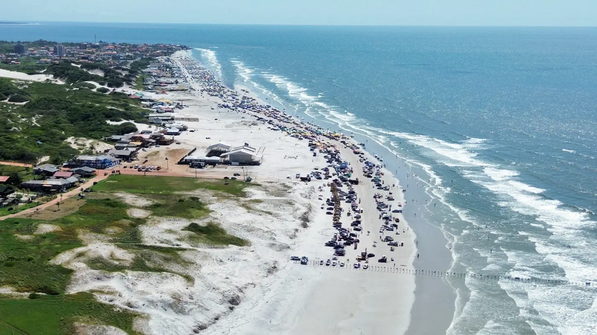
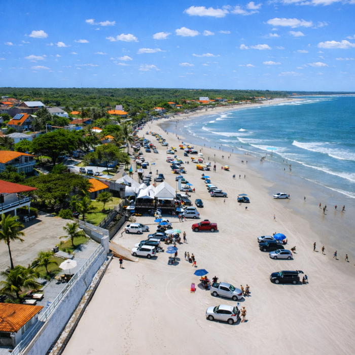
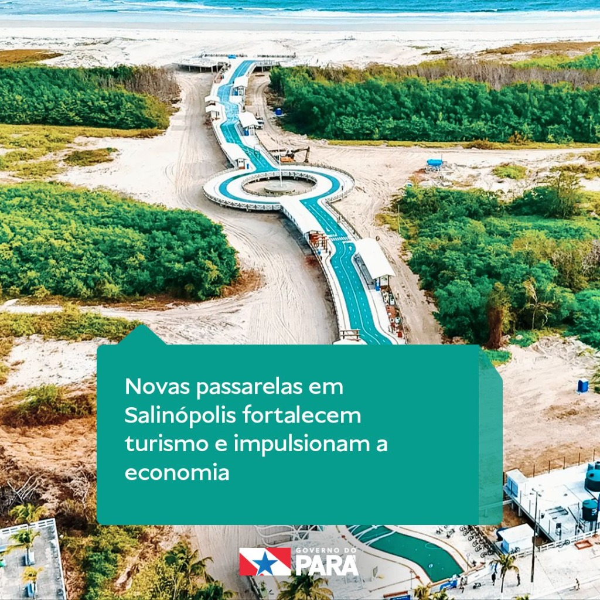
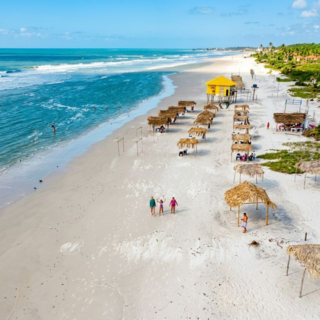
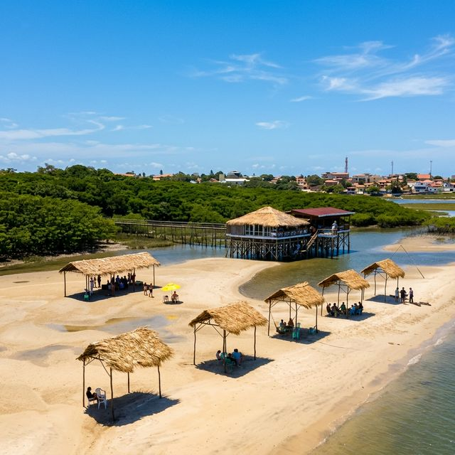

Quando pensamos em férias no Pará, Salinópolis – ou simplesmente Salinas – é o primeiro destino que vem à mente de milhares de viajantes. A Amazônia Atlântica nos presenteia com cenários belíssimos, mar revigorante e uma energia única. Mas, com tantas opções, surge a dúvida: qual praia escolher?
Seja para curtir o agito, aproveitar com as crianças ou buscar um refúgio de paz, Salinas tem uma praia para você. Neste guia, detalhamos as principais praias da cidade, os seus diferenciais e revelamos qual é a nossa favorita absoluta.
1. Praia do Atalaia: O Agito e a Tradição
A Praia do Atalaia é, sem dúvida, a mais famosa de Salinópolis. Fica a apenas 15 minutos de carro (15 km) do Hotel Solar. A faixa de areia é tão larga e firme que a principal característica – e atração – da praia é a entrada de carros. Sim, você pode estacionar seu veículo literalmente "pé na areia", armar a sua tenda, ligar o seu som e interagir com as grandes barracas estruturadas.
O Atalaia é para quem gosta de movimento. É lá que o agito acontece, com dezenas de restaurantes servindo peixe frito, caranguejo e aquela cerveja trincando. É perfeita para grupos de amigos e pessoas que gostam de estar no centro das atenções, pois a infraestrutura é completa e sempre há algo acontecendo.

2. Praia do Farol Velho: Charme e Tranquilidade em Família
Separada do Atalaia quase que apenas pela geografia (a maré junta as duas, formando uma extensa faixa contínua), a Praia do Farol Velho tem um perfil ligeiramente mais pacato. Como o próprio nome diz, ela homenageia o histórico farol da região.
É uma excelente escolha de praia para ir em família. Embora ainda conte com barracas maravilhosas, o ambiente tende a ser um pouco mais tranquilo, ideal para deixar as crianças brincarem na areia fina, formar piscinas naturais na maré baixa e tomar um banho de mar sossegado. O pôr do sol visto do Farol Velho é espetacular.

3. Praia do Maçarico: O Ponto de Encontro da Noite
A Praia do Maçarico tem um perfil diferente das outras. Principalmente porque a atração aqui não é entrar com o carro na areia, mas sim caminhar pelo seu belíssimo calçadão e orla revitalizada.
Durante o dia, o mar de águas calmas atrai banhistas que buscam tranquilidade e structure urbanizada. A Praia do Maçarico fica a apenas 800 metros do Hotel Solar, então dá para ir caminhando tranquilamente ou de bicicleta, bem rapidinho! Mas é a partir do entardecer que o Maçarico brilha: a orla vira o grande ponto de encontro de Salinas. Repleta de quiosques, restaurantes para todos os gostos, artesanato local e praças bem iluminadas, caminhar pela passarela do Maçarico sentindo a brisa noturna e tomando um sorvete regional é um programa imperdível após um dia inteiro de Sal nas outras praias.

4. Praia Ponta do Espadarte: O Paraíso Escondido (A Favorita)
Se nas praias anteriores encontramos muita infraestrutura e badalação, na Ponta do Espadarte encontramos a verdadeira essência da natureza amazônica litorânea. Confesso: essa é, sem dúvida, a minha favorita.
Por que a Ponta do Espadarte é a melhor? Porque ela é um refúgio exclusivo. Longe das aglomerações e dos carros com som alto, a Ponta do Espadarte oferece uma areia firme e intocada, um mar limpo que convida a um mergulho longo e demorado, e uma paz indescritível.

O acesso muitas vezes é feito via passeio de barco (pelo manguezal) ou com caminhadas estratégicas, o que já torna a experiência uma verdadeira aventura. A melhor parte é que você pode pegar um barco que busca você diretamente no trapiche do próprio Hotel Solar (onde fica o nosso restaurante Reserva Solar). Lá, a conexão é apenas você, o som das ondas, a brisa constante e a grandiosidade da natureza. Para quem quer renovar as energias de verdade, fugir da rotina pesada da cidade e encontrar um paraíso escondido, não existe lugar melhor em Salinópolis que a Ponta do Espadarte.
5. Praia do Solar: A Nossa Praia Exclusiva
Para fechar com chave de ouro, não poderíamos deixar de falar da apaixonante Praia do Solar. Essa é uma praia muito especial, pois ela tem vida própria: ela só se revela para nós quando a maré seca. E como o ciclo das marés muda, a nossa praia nunca tem a mesma rotina! Em alguns dias, ela surge do final da tarde para a noite; em outros, da manhã até a tarde.
É exatamente essa dinâmica que dá à Praia do Solar o seu maior charme. Por estar localizada bem no hotel (com acesso exclusivo pelo nosso trapiche, junto ao restaurante Reserva Solar) e próxima ao mangue, é uma praia com acesso praticamente exclusivo para os hóspedes do Hotel Solar. É o ambiente perfeito para quem busca tranquilidade e contato total com a natureza: excelente para fazer uma boa leitura, correr na areia ou deixar as crianças brincarem livremente.

Temos tanto orgulho desse refúgio que frequentemente realizamos eventos inesquecíveis diretamente na areia da Praia do Solar. É um privilégio que você só vive hospedando-se com a gente!
Vem viver o melhor do Verão!
O Hotel Solar fica na cidade, de frente para o mar, perto do Maçarico e em ponto estratégico para acessar qualquer uma dessas praias incríveis (nós até ajudamos você a organizar o passeio para a Ponta do Espadarte!). Relaxe na nossa piscina e no nosso SPA após um belo dia de praia.
Reserve Agora no Hotel Solar